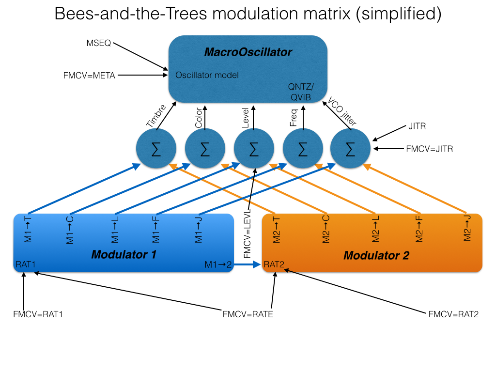

This repository is based on a copy of the Mutable Instruments GitHub repository at https://github.com/pichenettes/eurorack
So far, the only modified code is the Bees-and-the-Trees enhancements to the Braids module.
Acknowledgements
First and foremost, huge thanks are due to Olivier Gillet of Mutable Instruments for creating Braids and his other wonderful Eurorack synth modules - in terms of depth and breadth of creativity, elegance and excellence of implementation and execution, they are head-and-shoulders above other Eurorack synth modules. But equally huge thanks are due to Olivier for having the vision, courage and faith to release the designs and source code for his modules under open-source licenses. Without that, the modifications which are documented here would not have been possible.
{kind=link}
Many thanks also to Sneak-Thief in Berlin, first of all for providing the impetus for me to start hacking the Braids code, and then for providing lots of really useful feedback on the initial design of the Bees-and-the-Trees modifications, and finally for actively testing the code and discovering several bugs (and documenting how to reproduce them!). Thanks are also due to weliveincities, Bmhot, stevencrichton and stevenb on the Mutable Instruments forum for testing alpha and beta versions, finding and reporting various bugs, and providing feedback.
Bees-and-the-Trees
Bees-and-the-Trees is a modification to the "official" firmware as supplied by Mutable Instruments on the Braids modules it manufactures and sells.
The goals of these modifications are to:
- expand the internal, self-modulation facilities in Braids;
- expose a wider range of internal parameters to external voltage control;
- add a few additional features that may make Braids more useful or easier to integrate into a modular patch in some circumstances.
These enhancements are necessarily constrained by a number of factors:
- the hardware design of all existing Braids modules is obviously fixed, and thus the firmware must work with the hardware facilities available. For example, there are four CV inputs available in Braids. Firmware changes cannot create a fifth one.
- the computational power of the STM32F3 processor which powers Braids is finite, and thus there is a limit to the amount and complexity of additional code and computations that can be added to the firmware while still allowing the processor to keep the audio buffer filled, in real-time.
- the storage space for compiled program code in flash memory is limited to exactly 108 pages of 1024 bytes each - that is, 110,592 bytes. Thus there is a hard limit to the size and complexity of the firmware for Braids. In order to remain under this firmware size limit, some features have had to be removed from Braids to make space for the enhancements described below. See below for details of what has been removed.
 Bees-and-the-Trees is based on the official Braids v1.7 source code, and has had the sync buffer and DAC timing bug fixes which were made to the v1.7 code in late January 2015 ported to it: thus the core oscillator code is identical to the current Braids v1.7 code. However, many changes to modulation options and other aspects have been made.
Bees-and-the-Trees is based on the official Braids v1.7 source code, and has had the sync buffer and DAC timing bug fixes which were made to the v1.7 code in late January 2015 ported to it: thus the core oscillator code is identical to the current Braids v1.7 code. However, many changes to modulation options and other aspects have been made.
Why is it called Bees-and-the-Trees? Because Olivier Gillet named his alternative firmware for the Mutable Instruments Tides module "Sheep". That established a pattern which demanded to be followed.
Intended audience for Bees-and-the-Trees
Bees-and-the-Trees is intended for expert users of the Braids module. It, and this documentation, presumes a good understanding of the way in which Braids running the official, factory firmware works. If you have only recently obtained your Braids module, then it is strongly recommended that you spend some time (days, weeks, months) thoroughly familiarising yourself with it before trying Bees-and-the-Trees. Braids is a complex, deep module - it isn't called a MacroOscillator for nothing! Bees-and-the-Trees only makes it more complex. Also, this documentation is intended to be a meta-manual, to be read in conjunction with or as an adjunct to the official Braids manual.
Enhancements made by Bees-and-the-Trees
- Instead of a single internal envelope, there are now two internal modulators,
MOD1andMOD2. TheMOD1andMOD2menu settings allow each internal modulator to be turned off (OFF), put in in LFO mode (LFO), or in one of two envelope modes (ENV- and ENV+). ENV- and ENV+ are negative and positive envelopes respectively - ENV+ is like a traditional attack-decay envelope, ENV- is the inverse. - Each internal modulator has a rate setting,
RAT1andRAT2respectively, with ranges from 0 to 127. When in envelope mode, lower rate values produce shorter envelope segment (attack and decay) durations, and higher rate values produce longer envelope segment durations i.e. slower envelopes. When in LFO mode, lower rate values produce slower LFO speeds (lower LFO frequency), and higher rate values produce faster speeds (higher frequencies), if theRINV(rate inversion) setting is ON (which is the default). However, if you turnRINVoff, then higherRAT1orRAT2settings will produce slower LFO speeds. This can be useful if you are controlling one envelope and one LFO with an external voltage - see below. - Each internal modulator has five depth controls (
M1→T,M1→C,M1→L,M1→FandM1→J, andM2→T,M2→C,M2→L,M2→FandM2→J), which set the depth of modulation for each of timbre, color, level (amplitude), frequency (pitch) and VCO jitter (drift), respectively, between values of 0 to 250, except for frequency modulation depth, which is 0 to 127. Each modulation destination receives a weighted average of the instantaneous modulator values. For example, ifM1→T=30 and the instantaneous value of modulator 1 is, say, 100, andM2→T=60 and the instantaneous value of modulator 2 is 200, then the timbre parameter will receive a value of ((30 * 100) + (60 * 200))/2 = 7500. Obviously the values for modulator 1 and modulator 2 change each time the envelopes/LFOs are rendered, which is about 4000 times per second. - The timbre and color potentiometers and/or the timbre and color CV inputs act as offsets - the weighted average of the modulator values is added to these offsets. The
GAINsetting controls the initial gain (offset) for the level. It defaults to 250 (the maximum). Unlike timbre and color, which are added to whatever offset is set by timbre and color potentiometers and/or the timbre and color CV inputs, the the modulation values for level are subtracted from this initial gain offset value (GAIN). Thus, when a modulator is in ENV+ mode, it will have no effect of the output level if theGAINis already set to 250, its maximum. In order to hear the effect of a positive-going envelope on level, you must reduceGAINto a lower value - all the way down to zero if you wish to hear nothing between envelope firings. - The
M1→2settings controls the degree of frequency modulation of modulator 2 by modulator 1. Yes, LFO 1 can frequency modulate LFO 2! This also works in envelope mode. M1T2,M1C2andM1F2are ON/OFF switches which determine whether the depth of modulation of timbre, color and pitch by modulator 2 is itself modulated by the current value of modulator 1. That is, when enabled, these settings mean that modulator 1 determines depth of modulator 2 modulation of timbre, color and oscillator frequency, respectively. Thus, if you set modulator 1 to be a slow envelope with a gentle attack, and setM1F2on, withM2→Fset to some positive amount, and modulator 2 in LFO mode, then the effect will be vibrato that slowly fades in after a trigger is received. There are many other interesting variations possible.- The ratio between the attack and decay segments of each envelope, or the rising part of the waveform and the falling part in LFO mode, can be set by menu choices labelled
⇑⇓1and⇑⇓2. These provide value choices ranging between 2 and 5000 (these are ratios expressed as a percentage, thus 100 is a ratio of 1:1). These values refer to the ratio between the duration of the attack segment of the attack-decay (AD) envelope, or the rising segment of the LFO waveform, and the duration of the decay segment or falling segment, respectively. Thus a value of 10 means that the attack part of the envelope is a tenth of the duration of the decay part. Likewise, at a setting of 10 the LFO waveform is asymmetrical, with the rising portion only one-tenth as long as the falling portion. Obviously a ratio setting of 100 produces a symmetrical waveform, and an envelope in which attack and decay are of equal duration. At a setting of 5000, the decay/falling arm of the envelope is 50 times as long as the attack/rising arm. NOTE: the LFO frequency or the total envelope duration will change as the⇑⇓1and⇑⇓2settings are adjusted. This is a known deficiency which may be able to be addressed in future versions. For now, you may need to re-adjustRAT1orRAT2after changing⇑⇓1and⇑⇓2. - Each of the two internal modulators has its own pair of shape settings (
⇑SH1and⇓SH1, and⇑SH2and⇓SH2). These set the shape of the curve used for the attack/rising and decay/falling parts of the envelope/LFO waveform respectively, for each of modulator 1 and modulator 2. Thus, an envelope can have different shapes for the attack and decay portions, and an LFO waveform can not only be asymmetrical, but have a different curvature or shape on the raising and falling arms of its cycle. The following curve shapes are available:- EXPO is an exponential curve, as used in the envelopes in the official Braids firmware;
- LINR is a linear curve i.e. a straight line (and thus in LFO mode produces sawtooth, triangle or ramp waveforms, depending on the
⇑⇓1or⇑⇓2ratio settings); - WIGL is a wiggly line;
- SINE is a sine wave (well, almost a sine wave - it re-uses an existing look-up table in the Braids code which is close to a sine wave);
- SQRE is a square-ish curve - a bandwidth-limited square wave with quite rounded shoulders, in fact;
- BOWF is a logarithmic curve with a flat top - it is actually an inverted version of the bowing envelope for the BOWD oscillator mode in Braids, hence the name;
- RNDE is the same as EXPO except that the target level for the top of the envelope or LFO waveform varies randomly on each envelope or LFO cycle;
- RANDL and RNDS are the same as RNDE, except using linear and square-ish curves as described above;
- RNDM sets a fixed random level which is flat for the entire envelope segment or LFO half-wave - thus it acts like a traditional clocked sample-and-hold sampling a random voltage. Please be aware that this mode can result in audible clicks when used for some modulation destinations, because the level shifts instantaneously - there is no rate-limiting or easing between successive levels.
- The
FMCVsetting replaces what was theMETAmenu setting in the official Braids firmware.FMCVdetermines to what use the FM control voltage input is put. The available choices are:- FREQ, which means the FM input does, um, FM (frequency modulation);
- META, which is the same as
METAmode on in the official firmware - voltage on the FM input scans through the oscillator modes; - RATE, in which voltage on the FM input sets the duration of the envelope segments, or the frequency of the LFOs - thus providing voltage-controlled envelopes and/or LFOs, with the FM voltage affecting the duration/speed of both internal modulators;
- RAT1 is the same except the FM voltage only affects modulator 1;
- RAT2 is also the same but the FM voltage only affects modulator 2. Note that for the rate settings, the voltage on the FM input is added to the RAT1 and RAT2 values for each each modulator, thus a base LFO speed or envelope duration can be set using RAT1 and RAT2, and that can then be modified by voltage on the FM input.
- JITR provides voltage control over VCO jitter (drift), with a base level set by the
JITRmenu setting (and also subject to modulation by the internal modulators) via theM1→JandM2→Jmodulation depth settings. - LEVL provides voltage control over the level (amplitude, gain). You may need to reduce the initial gain (
GAIN) down to zero to hear the full effect - approximately 5V at the FM CV input should produce full gain. This setting provides Braids with a built-in virtual VCA, in the same way that the Level input in Tides/Sheep acts as a virtual VCA.
- LFO range has been enabled in the range (
RANG) menu. This LFO range was always present in the Braids source code, but its selection was disabled. The LFO range seems to go down to about 1Hz or so - thus it doesn't make Braids into a proper LFO, but it is low enough for many LFO modulation duties. Braids certainly produces many more interesting LFO waveforms than your average voltage-controlled LFO, And of course the two internal LFOs can still modulate Braids when its set to LFO - thus you can use Braids as two voltage-controlled LFOs (MOD1andMOD2) inside your voltage-controlled LFO (the main Braids VCO when in LFO range)! DRFT(VCO drift) has been renamedJITR(jitter), and is now a settable value, from zero (off) to 127. At a setting of 127, you get noisy sonic destruction, but lower levels of jitter can add some nice dirt to some oscillator models.JITRis also now a destination for the internal modulators, as mentioned above, and it can also be put under voltage control via theFMCVsetting. Note thatJITRcauses the oscillator pitch to change (not sure why), but this can be balanced out by applying pitch modulation from the same modulator (i.e. usingM1→ForM2→F), because frequency modulation fortuitously acts in the opposite sense to the pitch change caused byJITR.- The
TSRC,TDLY,OCTV,QNTZ,BITS,BRIG,CAL.and CV testing menu choices are unchanged and function exactly as they do in the official Braids firmware. - However, immediately following
QNTZ(pitch quantisation), there is a new menu selection calledQVIB, which stands for "quantise vibrato". It defaults to OFF - that is, vibrato from the internal modulators (or from the external FM input) is applied after pitch quantisation has been performed, if pitch quantisation is enabled (via theQNTZsetting). However, ifQVIBis set to ON, then quantisation will be performed after pitch modulation from the internal modulators has been added. Thus, a triangle pitch (frequency) modulation, provided by, say,MOD1via theM1→Flevel, will result in rising and falling chromatic arpeggio effects, more or less. It can be quite effective when the RNDM modulator shape is used, for example. M1SYandM2SY(modulator 1 sync, and modulator 2 sync) determine whether a trigger (either external or auto) will reset the phase of modulator 1 or modulator 2, respectively. They default to ON. Tip: if you are usingMSEQ(see below) andMOD1and/orMOD2in LFO mode to modulate timbre, color or other parameters, then try turningM1SYand/orM2SYoff to decouple the internal modulators from the trigger stream driving the meta-sequencer.OSYN(oscillator sync) determines whether oscillator phase synchronisation is enabled or not. It defaults to OFF. When enabled, (external or auto) triggers may cause audible clicks in some oscillator modes. Disabling it prevents those clicks, at the expense of not resetting the oscillator phase. However, the official Braids firmware disables oscillator sync whenever the internal envelope was used, in any case, probably for the same reason.- A simple step meta-sequencer has been added. There are eight steps available in the sequence, and the sequence is advanced by triggers received on the trigger input jack. The
MSEQsetting enables the meta-sequencer. The value ofMSEQ, from 1 to 8, also sets the number of steps. The settingsMSQ1,MSQ2...MSQ8allow the oscillator model for each step to be chosen. The settingsMSL1,MSL2...MSL8determine the number of trigger inputs that each step is held for - all these settings default to 1. Thus,MSL4=3 means that the sequence of oscillator models will stay on step 4 for 3 successive input triggers. Using this, a "rhythm" of oscillator models can be set up, even when the triggers come from a regular clock signal. Note that ifMSEQis enabled, thenFMCV=META mode is disabled if it is set. However, otherFMCVmodes still work whenMSEQis enabled. - There is a new oscillator model, called ZERO, right at the end of the model list, after PRTC. Don't get too excited, because this model fills the audio buffer with zeroes, and thus produces absolute silence. This was added to enable "rests" to be inserted in the
MSEQmeta-sequencer. The downside is that there is an audible click when switching to it, because the signal amplitude immediately goes to zero. I can't think of any easy way to avoid this, however. The same problem occurs, to a lesser degree, and in the factory firmware as well, when switching to some of the other models, for similar reasons. Note that the ZERO model isn't accessible viaFMCV=META mode.

Anti-enhancements
These changes were required in order to free up space in the firmware storage for the enhancements described above.
- A paschal oophorectomy has been performed: the Easter egg oscillator model has been removed and the ability to trigger Easter egg mode has been disabled. One could say that the code for it has been Pynchoned off.
- The marquee feature has been removed.
- The QPSK oscillator model has been removed.
- The sample rate (
RATE) setting has been removed. In Bees-and-the-Trees, Braids is locked at the maximum 96K sample rate instead. That isn't a problem from a CPU load perspective, because the sample rate reduction method didn't mean that the Braids processor was working less hard, just that it was discarding every second sample, or all but every third sample, or all but every fourth sample etc. However, theBITSsetting is still there and still works, so you can still do bit-depth reduction for lo-fi grungy sounds, if that is your thing, andJITR(which is calledDRFTin the factory Braids firmware) can now be cranked up to levels many times greater than before, for a really "dirty" sound. - VCO tune flattening (
FLAT) and signature waveshapping (SIGN) have been removed.
Installation and De-installation
Obligatory warnings
- As per the license text at the top of every source code file for Bees-and-the-Trees, Bees-and-the-Trees is available for your use only if you accept the following terms:
THE SOFTWARE IS PROVIDED "AS IS", WITHOUT WARRANTY OF ANY KIND, EXPRESS OR IMPLIED, INCLUDING BUT NOT LIMITED TO THE WARRANTIES OF MERCHANTABILITY, FITNESS FOR A PARTICULAR PURPOSE AND NONINFRINGEMENT. IN NO EVENT SHALL THE AUTHORS OR COPYRIGHT HOLDERS BE LIABLE FOR ANY CLAIM, DAMAGES OR OTHER LIABILITY, WHETHER IN AN ACTION OF CONTRACT, TORT OR OTHERWISE, ARISING FROM, OUT OF OR IN CONNECTION WITH THE SOFTWARE OR THE USE OR OTHER DEALINGS IN THE SOFTWARE.
- Installing Bees-and-the-Trees will reset the calibration data in your Braids, so you will need to re-calibrate it, using the (very straightforward) procedure described in the Braids manual. Likewise, re-installing official Braids firmware will also reset the calibration data, so you will need to re-calibrate yet again. However, it only takes a minute or so. But if you are not able to re-calibrate your Braids, then please do not install Bees-and-the-Trees!
- If you want to re-install the official Braids firmware, then you MUST re-install the latest release in the v1.7 factory firmware series, which is here: http://mutable-instruments.net/static/firmware/braids_1.7.wav – or a version of the factory firmware later than v1.7 if that is available. Do not re-install any of the earlier "release candidate" versions of v1.7 factory code, nor version 1.5 or earlier of the factory firmware. The reason is that only the very latest version of the official v1.7 Braids code contains the settings checking routine that ensures that re-installation of the official firmware after installing Bees-and-the-Trees (or other hacked code) will result is sane settings and a fully functional Braids. Of course, if there is a version of the official Braids firmware later than v1.7 available at the time you read this, then you should install that. The main thing to remember is that after installing Bees-and-the-Trees, you may experience problems if you try to re-install any version of the factory Braids firmware earlier than version 1.7. However, if you re-install version 1.7, it should be fine (all testing to date suggests that is the case, at least).
- You need to be aware that if you are installing Bees-and-the-Trees via the audio bootloader facilty then there is a very small chance that something may go wrong, either while installing Bees-and-the-Trees, or while re-installing the factory Braids firmware. Olivier Gillet has designed the audio bootloader to be highly failsafe, and almost foolproof, but nonetheless, there is a very small risk that you could end up with a non-functioning Braids due to a failed firmware upgrade (that is, your Braids ends up being "bricked"). If that happens, then I (Tim Churches) can offer only advice. I cannot offer an unbricking service, except to Braids users located in Sydney, and only then on a best-effort basis by prior negotiation. Thus, before trying Bees-and-the-Trees, you may wish to enquire whether there are other Braids users in the city or region where you live who are willing to re-install factory firmware for you using the FTDI or JTAG/SWD interfaces on Braids, just in case something does go wrong. I very much doubt that you will have any problems, but it is best to proceed cautiously. Note that installation of Bees-and-the-Trees, or any other firmware, cannot physically damage your Braids, so the module will always be recoverable if you have access to an FTDI or JTAG/SWD programmer as described here.
- Note also that the fine print in the Braids manual states that Olivier doesn’t offer an unbricking service for Braids that have had alternative firmware installed on them. That said, the likelihood of bricking your Braids when using the audio bootloader is very small – it has been designed to be failsafe and nearly idiot-proof.
OK, enough warnings.
If you have access to an FTDI interface or a suitable JTAG/SWD programmer, then you can just clone or download the Bees-and-the-Trees source code (use the HEAD commit from the master branch), compile it and flash it to your Braids. Instructions regarding this are here.
If you are intending to use only the audio bootloader, then you should carefully follow the following steps:
- Use the audio bootloader, as described in the Braids manual, to first load the very latest Braids v1.7 firmware – see the link to it above. Verify that works correctly.
- Practice the re-calibration procedure and verify that has worked.
- Proceed to load the latest Bees-and-the-Trees version via the audio bootloader in the same way. Compiled firmware images in WAV format for Bees-and-the-Trees are available at (to be added when testing is complete).
- Re-calibrate it.
- Go crazy with it.
You shouldn’t need to manually reset the stored settings if you follow this procedure – it should do that automatically when you install the Bees-and-the-Trees code (and likewise when you re-install the latest v1.7 or later factory firmware). However, if your Braids does seem confused, you can trigger a manual settings reset, in both the latest v1.7 firmware and in Bees-in-the-Trees, by navigating to the version string right at the end of the menu choices, and doing a long-click on the encoder. Warning: this also resets your calibration data, so you’ll need to re-calibrate yet again.
Re-installation of the factory Braids firmware is similar:
- Use the audio bootloader, as described in the Braids manual, to re-load the very latest Braids v1.7 firmware – see the link to it above. Verify that works correctly.
- Re-calibrate it.
TO-DO and Roadmap
- PENDING: Work out why VCO drift (
JITR) causes a pitch change. - PENDING: Prevent the LFO frequency or the total envelope duration from changing when the
⇑⇓1and⇑⇓2settings are adjusted. - MAYBE: Some of the parameters in Bees-and-the-Trees have ranges of 0 to 250, and some 0 to 127. I did have some vague plans to rationalise that and make them all 0 to 127, or all 0 to 250, at least in the user interface. However, some use steps of 5, others use steps of 1, in order to provide very fine resolution. Those steps may need to be tweaked to minimise the need for encoder twisting, while retaining adequately fine control over critical parameters (pitch modulation and LFO rates in particular).
- NOT FEASIBLE: It would be great to add a constrain-to-scales scales capability, similar to the one in Yarns or in the Shruthi and Ambika, to the pitch quantisation facility. However, such a feature requires various look-up tables, and there is just not enough flash storage space remaining - the firmware is almost at maximum size as it is.
- NOT FEASIBLE: Alternatively, it might be possible to add a simple step sequencer to Braids, like the ones in the Anushri and in Yarns. However, there may not be enough room, and I am very reluctant to remove any more features or oscillator models from Bees-and-the-Trees to accomodate it. Braids-with-built-in-sequencer might need to be a separate set of modifications resulting in different firmware yet again.
Encoder direction
Some crazy people have built DIY versions of Braids, and have used Bourns encoders in doing so. These operate in the opposite direction to those used by factory-built Braids modules. In order to accomodate this, #define BACKWARDS_ENCODER is set at the top of the encoder.h source code file. If you are compiling the source code yourself to load on a factory-built Braids, then you should ensure that this #define is commented out (place // in front of it on the same line). Failure to do that will mean that the encoder on your Braids will run backwards!
Discussion
All these enhancements seem to work fine, but more extensive testing is always helpful. As mentioned above, Bees-and-the-Trees is intended for advanced users only, and assumes thorough familiarity with the way Braids operates. The modulators can interact with each other, by design, in complex and interesting ways (note that their values are summed for each destination, and the resulting sum is clipped - thus with the right offsets and modulation depths, you can achieve half-wave clipping effects etc). All of these substantially extend the range of sounds that can be coaxed out of a Braids, without using any other modules at all. Add a single external LFO or sequencer modulating the FM input, or a clock or trigger source stepping the MSEQ mode, and all sorts of really amazing things are possible. As such, Bees-and-the-Trees may be particularly useful in small systems where external modulation sources are few, but since it does not remove or subtract any vital or commonly-used existing Braids features or capabilities, it may be useful even in large systems.
Feedback and suggestions are welcome and appreciated - please email tim.churches@gmail.com